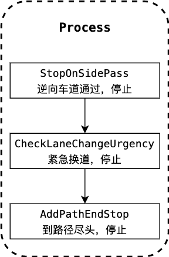
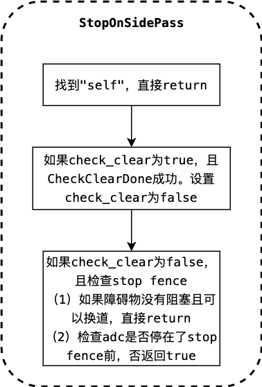
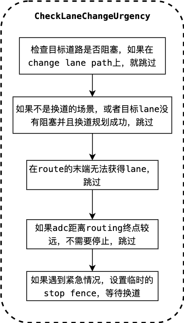
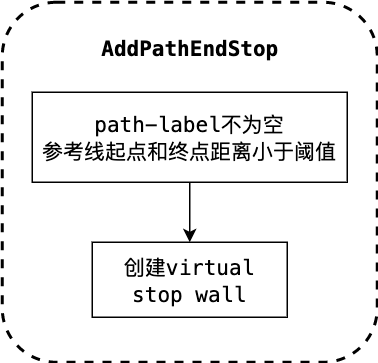

基于规则的停止决策¶
概览¶
基于规则的停止决策是规划模块的任务，属于task中的decider类别。
规划模块的运动总体流程图如下：

总体流程图以lane follow场景为例子进行说明。task的主要功能位于Process函数中。
Fig.1的具体运行过程可以参考path_bounds_decider。
相关代码及对应版本¶
基于规则的停止决策根据一些规则来设置停止标志。
代码位于Apollo r6.0.0 rule_based_stop_decider。
输入
apollo::common::Status RuleBasedStopDecider::Process(Frame *const frame, ReferenceLineInfo *const reference_line_info)
输入是frame和reference_line_info。具体解释可以参考path_bounds_decider。
输出
输出保存到reference_line_info中。
代码流程及框架¶
代码的运行流程如下图。

代码结构比较清楚：
apollo::common::Status RuleBasedStopDecider::Process(
Frame *const frame, ReferenceLineInfo *const reference_line_info) {
// 1. 逆向车道通过，停止
StopOnSidePass(frame, reference_line_info);
// 2. 紧急换道，停止
if (FLAGS_enable_lane_change_urgency_checking) {
CheckLaneChangeUrgency(frame);
}
// 3. 路径尽头，停止
AddPathEndStop(frame, reference_line_info);
return Status::OK();
}
相关算法解析¶
对上图总流程的的每个部分拆分开分析。
Stop on side pass

代码如下：
void RuleBasedStopDecider::StopOnSidePass(
Frame *const frame, ReferenceLineInfo *const reference_line_info) {
static bool check_clear; // 默认false
static common::PathPoint change_lane_stop_path_point;
// 获取path_data
const PathData &path_data = reference_line_info->path_data();
double stop_s_on_pathdata = 0.0;
// 1. 找到"self"，直接return
if (path_data.path_label().find("self") != std::string::npos) {
check_clear = false;
change_lane_stop_path_point.Clear();
return;
}
// 2. 如果check_clear为true，且CheckClearDone成功。设置check_clear为false
if (check_clear &&
CheckClearDone(*reference_line_info, change_lane_stop_path_point)) {
check_clear = false;
}
// 3.如果check_clear为false，且检查stop fence
if (!check_clear &&
CheckSidePassStop(path_data, *reference_line_info, &stop_s_on_pathdata)) {
// 3.1 如果障碍物没有阻塞且可以换道，直接return
if (!LaneChangeDecider::IsPerceptionBlocked(
*reference_line_info,
rule_based_stop_decider_config_.search_beam_length(),
rule_based_stop_decider_config_.search_beam_radius_intensity(),
rule_based_stop_decider_config_.search_range(),
rule_based_stop_decider_config_.is_block_angle_threshold()) &&
LaneChangeDecider::IsClearToChangeLane(reference_line_info)) {
return;
}
// 3.2 检查adc是否停在了stop fence前，否返回true
if (!CheckADCStop(path_data, *reference_line_info, stop_s_on_pathdata)) {
// 设置stop fence，成功就执行 check_clear = true;
if (!BuildSidePassStopFence(path_data, stop_s_on_pathdata,
&change_lane_stop_path_point, frame,
reference_line_info)) {
AERROR << "Set side pass stop fail";
}
} else {
if (LaneChangeDecider::IsClearToChangeLane(reference_line_info)) {
check_clear = true;
}
}
}
}
Check lane change Urgency

检查紧急换道，代码如下：
void RuleBasedStopDecider::CheckLaneChangeUrgency(Frame *const frame) {
// 直接进入循环，检查每个reference_line_info
for (auto &reference_line_info : *frame->mutable_reference_line_info()) {
// 1. 检查目标道路是否阻塞，如果在change lane path上，就跳过
if (reference_line_info.IsChangeLanePath()) {
is_clear_to_change_lane_ =
LaneChangeDecider::IsClearToChangeLane(&reference_line_info);
is_change_lane_planning_succeed_ =
reference_line_info.Cost() < kStraightForwardLineCost;
continue;
}
// 2.如果不是换道的场景，或者（目标lane没有阻塞）并且换道规划成功，跳过
if (frame->reference_line_info().size() <= 1 ||
(is_clear_to_change_lane_ && is_change_lane_planning_succeed_)) {
continue;
}
// When the target lane is blocked in change-lane case, check the urgency
// Get the end point of current routing
const auto &route_end_waypoint =
reference_line_info.Lanes().RouteEndWaypoint();
// 3.在route的末端无法获得lane，跳过
if (!route_end_waypoint.lane) {
continue;
}
auto point = route_end_waypoint.lane->GetSmoothPoint(route_end_waypoint.s);
auto *reference_line = reference_line_info.mutable_reference_line();
common::SLPoint sl_point;
// 将当前参考线的点映射到frenet坐标系下
if (reference_line->XYToSL(point, &sl_point) &&
reference_line->IsOnLane(sl_point)) {
// Check the distance from ADC to the end point of current routing
double distance_to_passage_end =
sl_point.s() - reference_line_info.AdcSlBoundary().end_s();
// 4. 如果adc距离routing终点较远，不需要停止，跳过
if (distance_to_passage_end >
rule_based_stop_decider_config_.approach_distance_for_lane_change()) {
continue;
}
// 5.如果遇到紧急情况，设置临时的stop fence，等待换道
const std::string stop_wall_id = "lane_change_stop";
std::vector<std::string> wait_for_obstacles;
util::BuildStopDecision(
stop_wall_id, sl_point.s(),
rule_based_stop_decider_config_.urgent_distance_for_lane_change(),
StopReasonCode::STOP_REASON_LANE_CHANGE_URGENCY, wait_for_obstacles,
"RuleBasedStopDecider", frame, &reference_line_info);
}
}
}
Add path end stop

在道路的尽头添加stop fence。代码如下：
void RuleBasedStopDecider::AddPathEndStop(
Frame *const frame, ReferenceLineInfo *const reference_line_info) {
if (!reference_line_info->path_data().path_label().empty() &&
reference_line_info->path_data().frenet_frame_path().back().s() -
reference_line_info->path_data().frenet_frame_path().front().s() <
FLAGS_short_path_length_threshold) {
const std::string stop_wall_id =
PATH_END_VO_ID_PREFIX + reference_line_info->path_data().path_label();
std::vector<std::string> wait_for_obstacles;
// 创建stop fence
util::BuildStopDecision(
stop_wall_id,
reference_line_info->path_data().frenet_frame_path().back().s() - 5.0,
0.0, StopReasonCode::STOP_REASON_REFERENCE_END, wait_for_obstacles,
"RuleBasedStopDecider", frame, reference_line_info);
}
}